Abriremos una terminal
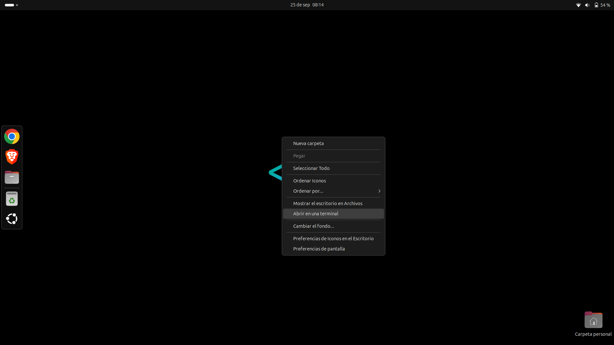Verificamos que java no este instalado con el comando java --version
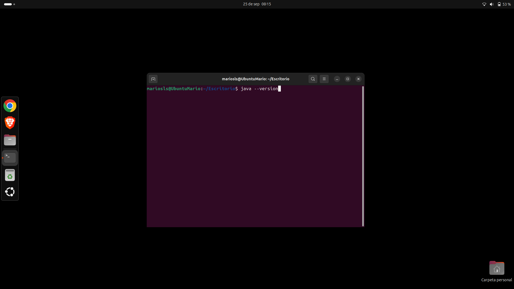En caso de que no este instalado nos saldra algo como esto y si esta instalado nos dira la version que tiene
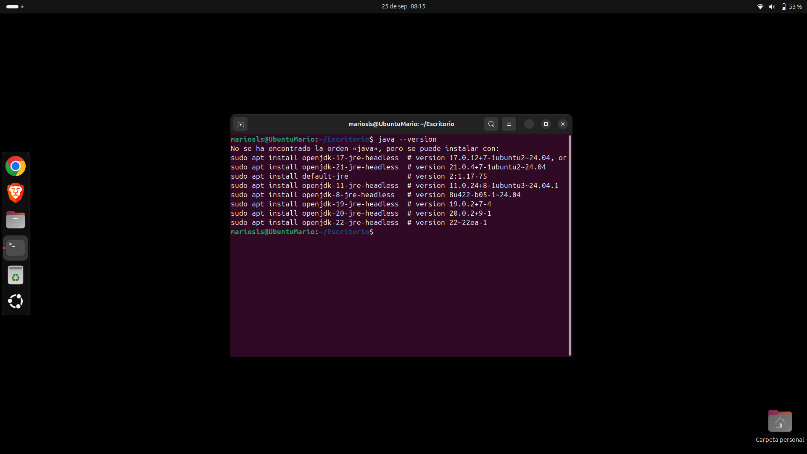Entraremos en JDK Oracle
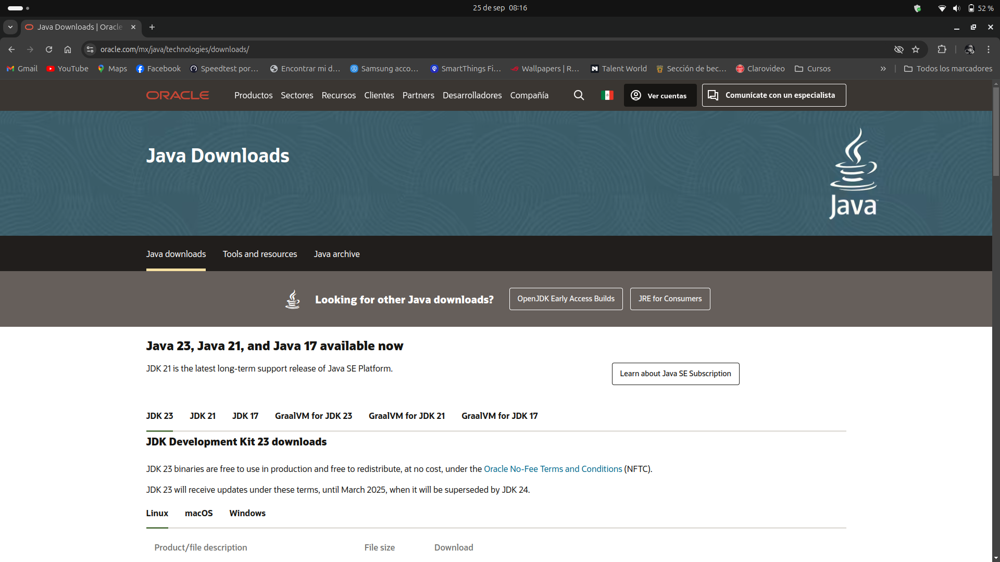Seleccionamos el JDK y el sistema que usaremos
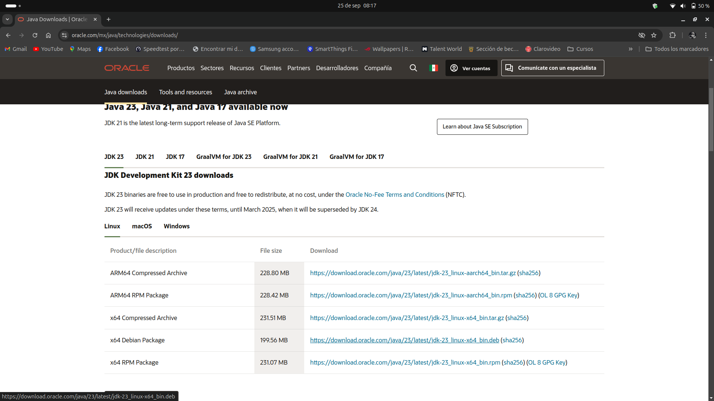Damos click en la descarga que queremos en este caso usaremos x64 Debian Package
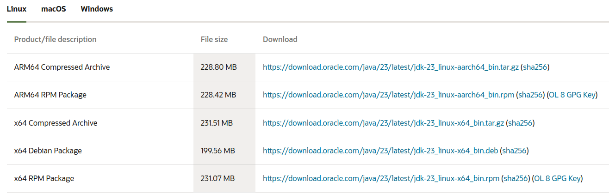Una vez finalizada la descarga regresamos a la terminal y entramos en la carpeta de Descargas o en donde se tenga el archivo descargado con el comando cd "Carpeta deseada" (Recuerda que si ya estas en una carpeta puedes volver atras con cd)
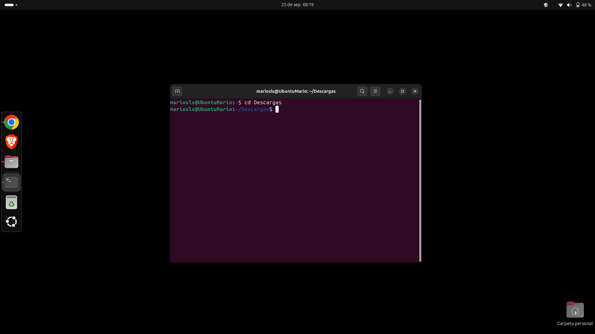Con el comando ls verificamos que el .deb este en esa carpeta
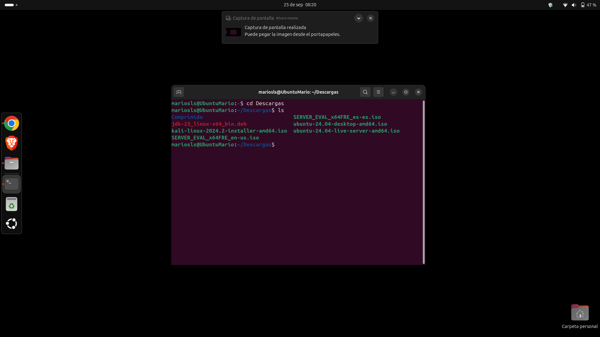Con el comando sudo dpkg -i jdk y despues tabulador se autocompletara con el nombre del archivo
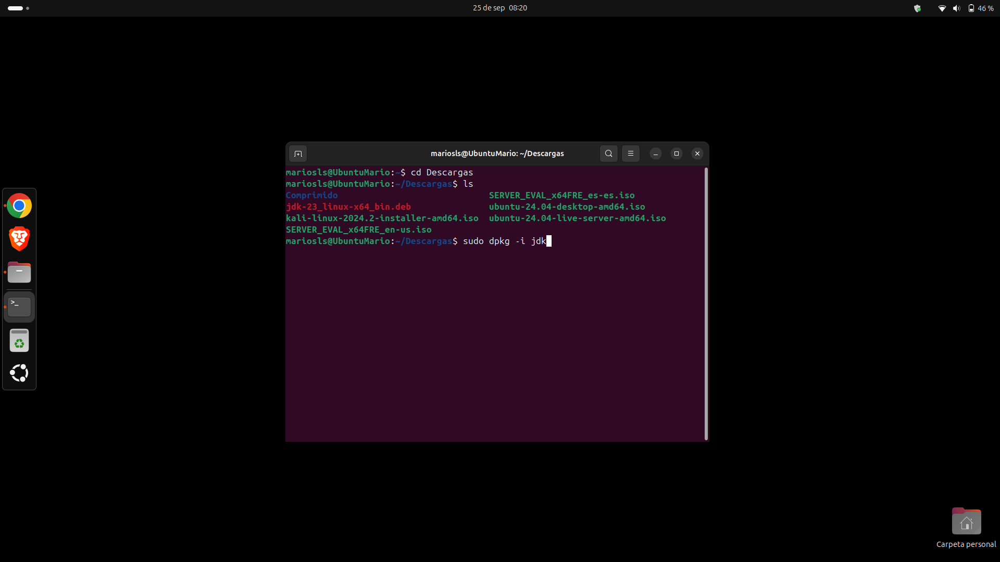Daremos enter y nos pedira la contraseña, una vez ingresada empezara la descarga
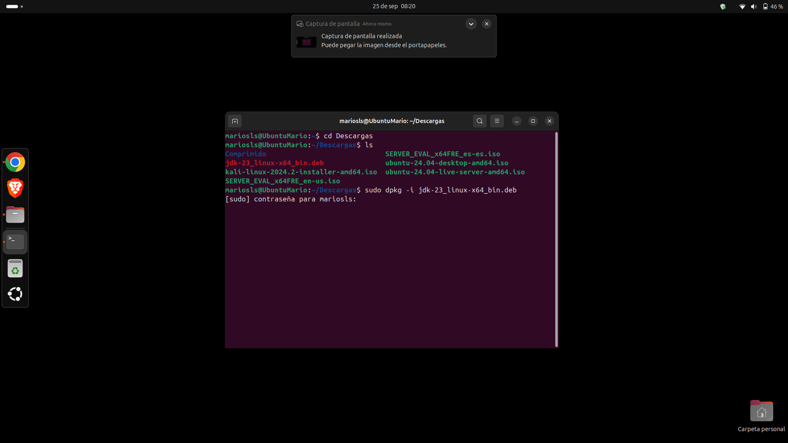Cuando la descarga finalice nos saldra algo como esto
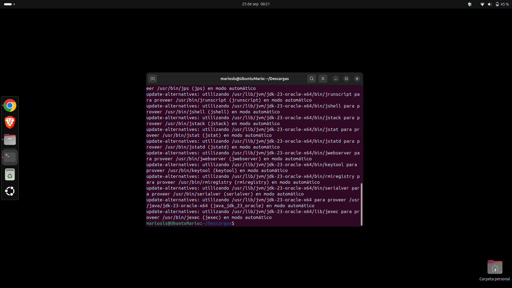Limpiamos consola con clear y escribiremos java --version y esta vez nos dara la version instalada
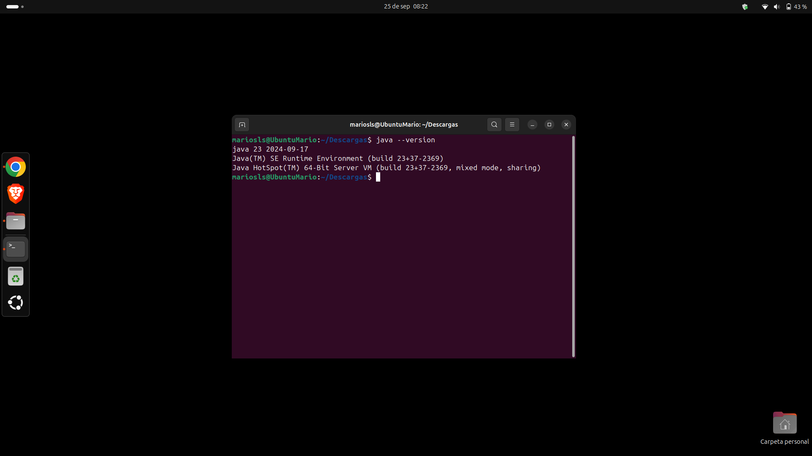